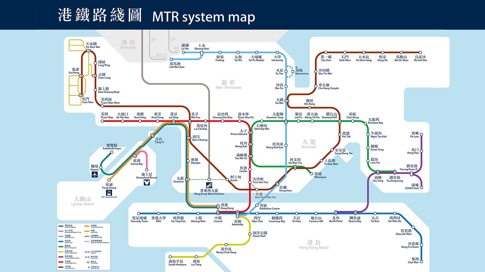

Current location: Home
> Transport
HKeMobility mobile app — a one-stop journey planner covering all modes of public transport
Plan your journey with the help of ‘HKeMobility’ — an all-in-one travel mobile app developed by Hong Kong’s Transport
Department. By providing information such as transport routes, fares, journey time, arrival time and real-time traffic
conditions about MTR, buses, mini-buses, trams, ferries and water taxis, it enables you to find the best point-to-point
transportation using public transport, and get around the city with ease.
MTR – Hong Kong’s railway system
Getting around Hong Kong couldn't be easier with the quick and efficient Mass Transit Railway (MTR) system. This covers
all major districts in the territory, including stops at the boundary with Mainland China (Lo Wu Station and Lok Ma Chau
Station).
The MTR also operates a light rail system that runs between Yuen Long and Tuen Mun in the New Territories.
Please note: Luggage size restrictions apply. Details here.

Buses
Buses in Hong Kong are plentiful, comfortable and air-conditioned. Especially popular are the double-deckers that offer
great views of the surrounding city from the top deck. Route number and destination are displayed. Fares are paid upon
boarding, based on distance travelled and exact change is required if paying by cash. Octopus cards are accepted on all
buses in Hong Kong.

Octopus — your essential travel card in Hong Kong
An Octopus digital or physical travel card is an essential purchase in Hong Kong. It’s a smart payment tool that allows
you to pay cash-free for all major public transport services, as well as dining, entertainment, shopping and more.

There are two types of Octopus for visitors:
-
Mobile Octopus: simply download the Octopus App for Tourists to instantly add Octopus to your iPhone or Huawei mobile
phone. Check your balance and top up without queuing with your credit or debit card anytime, anywhere on your phone.
There is a refundable deposit of HK$50 for Mobile Octopus. When you no longer need the Mobile Octopus, you can easily
apply for a refund of the deposit and remaining value through the Octopus App for Tourists.
-
Tourist Octopus: a physical travel card, available from HK$39 without any deposit. It boasts an iconic Hong Kong design
that makes it an ideal souvenir, which can be reused when you come back to Hong Kong in the future. There are many ways
to get a Tourist Octopus after you arrive in Hong Kong; click here to find out how according to your mode of travel.